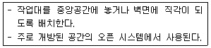
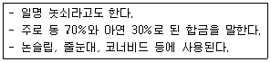
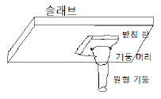

실내건축기능사 (2011-10-09 기출문제)
1과목: 실내디자인
1. 질감(Texture)에 대한 설명으로 옳지 않은 것은?
- 거친 질감은 가볍고 환한 느낌을 준다.
- 촉각 또는 시각으로 지각할 수 있는 어떤 물체 표면상의 특징을 말한다.
- 효과적인 질감 표현을 위해서는 색채와 조명을 동시에 고려해야 한다.
- 질감은 시각적 환경에서 여러 종류의 물체들을 구분하는데 도움을 줄 수 있는 특징이 있다.
(정답률: 87%)

2. 디자인 구성원리 중 강조에 관한 설명으로 가장 알맞은 것은?
- 전체적인 조립방법이 모순없이 질서를 잡는 것
- 서로 다른 요소들 사이에서 평형을 이루는 상태
- 시각적으로 관심의 초점이자 흥미의 중심이 되는 것
- 규칙적인 요소들의 반복으로 디자인에 시각적인 질서를 부여하는 통제된 운동감각
(정답률: 88%)
3. 기념비적인 스케일에서 일반적으로 느끼게 되는 감정은?
- 엄숙함
- 친밀감
- 안도감
- 우아함
(정답률: 89%)
4. 실내디자인의 개념과 가장 거리가 먼 것은?
- 순수예술
- 전문과정
- 실행과정
- 디자인 활동
(정답률: 92%)
5. 다음 설명에 알맞은 부엌 작업대의 배치유형은?

- 일렬형
- 병렬형
- ㄱ자형
- 아일랜드 형
(정답률: 67%)
6. 다음 중 황금분할의 비율로 가장 알맞은 것은?
- 1 : 1.168
- 1 : 1.414
- 1 : 1.618
- 1 : 1.816
(정답률: 78%)
7. 다음 중 실내공간의 분할에 있어 차단적 구획에 사용되는 것은?
- 커튼
- 조각
- 기둥
- 조명
(정답률: 65%)
8. 단순하며 깔끔한 느낌을 주며 창 이외에 칸막이 스크린으로도 효과적으로 사용할 수 있는 것으로 쉐이드(shade)라고도 불리우는 것은?
- 롤 블라인드(roll blind)
- 로만 블라인드(roman blind)
- 버티컬 블라인드(vertical blind)
- 베네시안 블라인드(venetian blind)
(정답률: 42%)
9. 상점계획에서 파사드 구성에 요구되는 소비자 구매 심리 5단계에 속하지 않는 것은?
- 주의(Attention)
- 욕망(Desire)
- 기억(Memory)
- 유인(Attraction)
(정답률: 75%)
10. 다음 중 공간배치 및 동선의 편리성과 가장 관련이 있는 실내디자인의 기본 조건은?
- 경제적 조건
- 환경적 조건
- 기능적 조건
- 정서적 조건
(정답률: 90%)
11. LDK형 단위주거에서 D가 의미하는 것은?
- 거실
- 식당
- 부엌
- 화장실
(정답률: 87%)
12. 등받이와 팔걸이가 없는 형태의 보조의자로 가벼운 작업이나 잠시 걸터앉아 휴식을 취하는데 사용되는 것은?
- 스툴
- 이지 체어
- 풀업 체어
- 라운지 체어
(정답률: 81%)
13. 다음 중 조명기구자체가 하나의 예술품과 같이 강조되거나 분위기를 살려주는 역할을 하는 장식조명에 해당하지 않는 것은?
- 펜던트(pendant)
- 브라켓(bracket)
- 글레어(glare)
- 샹들리에(chandelier)
(정답률: 62%)
14. 음악적 감각이 조형화된 것으로서 청각의 원리가 시각적으로 표현된 것이라 할 수 있는 디자인 원리는?
- 균형
- 강조
- 대비
- 리듬
(정답률: 92%)
15. 창(窓)을 가동여부에 따라 고정창, 이동창으로 구분할 경우 다음 중 고정창에 해당하지 않는 것은?
- 미서기창
- 윈도우 창
- 베이 윈도우
- 픽쳐 윈도우
(정답률: 68%)
16. 다음 중 잔향시간에 대한 설명으로 옳은 것은?(오류 신고가 접수된 문제입니다. 반드시 정답과 해설을 확인하시기 바랍니다.)(오류 신고가 접수된 문제입니다. 반드시 정답과 해설을 확인하시기 바랍니다.)
- 잔향시간은 실의 용적에 비례한다.
- 잔향시간은 실의 흡음력에 반비례한다.
- 잔향시간은 실의 형태에 크게 영향을 받는다.
- 잔향시간이 없으면 음량이 많아져서 음을 듣기 어렵게 된다.
(정답률: 34%)
17. 실내의 간접조명에 대한 설명으로 옳은 것은?
- 조명률이 좋다.
- 눈부심이 일어나기 쉽다.
- 균일한 조도를 얻을 수 있다.
- 매우 좁은 각도로 빛이 배광되므로 강조조명에 적합하다.
(정답률: 75%)
18. 고체 양쪽의 유체 온도가 다를 때 고체를 통하여 유체에서 다른 쪽 유체로 열이 전해지는 현상은?
- 대류
- 복사
- 증발
- 열관류
(정답률: 62%)
19. 다음 중 자연 환기 방법에 해당하지 않는 것은?
- 바람에 의한 환기
- 온도차에 의한 환기
- 환기통에 의한 환기
- 소형 팬에 의한 환기
(정답률: 85%)
20. 기온, 습도, 기류의 3요소의 조합에 의한 실내 온열감각을 기온의 척도로 나타낸 것은?
- 유효온도
- 등가온도
- 작용온도
- 평균복사온도
(정답률: 82%)
2과목: 실내환경
21. 다음과 같은 특징을 갖는 동합금은?

- 황동
- 단동
- 청동
- 포금
(정답률: 85%)
22. 유성페인트에 대한 설명 중 옳은 것은?
- 붓바름 작업성 및 내후성이 우수하다.
- 저온다습할 경우에도 건조시간이 짧다.
- 내알칼리성은 우수하지만, 광택이 없고 마감면의 마모가 크다.
- 염화비닐수지계, 멜라민수지계, 아크릴수지계 페인트가 있다.
(정답률: 68%)
23. 석재의 일반적 성질에 대한 설명으로 옳지 않은 것은?
- 가공성이 좋지 않다.
- 불연성이고 내구성이 크다.
- 인장강도가 압축강도보다 커서 가구재로 사용이 용이하다.
- 외관이 장중하고 석질이 치밀한 것을 갈면 미려한 광택이 난다.
(정답률: 78%)
24. 다음 중 천연골재에 속하지 않는 것은?
- 강모래
- 부순돌
- 산자갈
- 바다자갈
(정답률: 84%)
25. 페놀수지 접착제에 대한 설명으로 옳지 않은 것은?
- 내수성이 우수하다.
- 내열성이 우수하다.
- 열경화성 수지계 접착제이다.
- 주로 유리나 금속 접착에 사용되며 목재제품에는 사용이 곤란하다.
(정답률: 59%)
26. 집성목재에 대한 설명으로 옳지 않은 것은?
- 아치와 같은 굽은 부재는 만들지 못한다.
- 응력에 따라 필요한 단면을 만들 수 있다.
- 목재의 강도를 인공적으로 자유롭게 조절할 수 있다.
- 보와 기둥에 사용할 수 있는 단면을 가진 것도 있다.
(정답률: 58%)
27. 목재의 결점 중 성장 중의 가지가 말려들어가서 만들어진 것으로 주위의 목질과 단단히 연결되어 있어 강도에는 영향이 미치지 않는 것은?
- 지선
- 산옹이
- 수지낭
- 컴프레션 페일러
(정답률: 53%)
28. 금속제 용수철과 완충유와의 조합작용으로 열린 문이 자동으로 닫혀지게 하는 것으로 바닥에 설치되는 것은?
- 나이트 래치
- 도어 스톱
- 크레센트
- 플로어 힌지
(정답률: 72%)
29. 블론 아스팔트의 성능을 개량하기 위해 동식물성 유지와 광물질 분말을 혼입한 것으로 일반 지붕 방수 공사에 이용되는 것은?
- 스트레이트 아스팔트
- 아스팔트 프라이머
- 아스팔트 펠트
- 아스팔트 컴파운드
(정답률: 43%)
30. 다음 중 포틀랜드 시멘트의 주원료에 해당하는 것은?
- 산화철
- 실리카
- 석회석
- 대리석
(정답률: 66%)
3과목: 실내건축재료
31. 건축재료의 역학적 성질에 대한 설명 중 옳은 것은?
- 작은 변형에도 쉽게 파괴되는 성질을 인성이라 한다.
- 압력이나 타격에 의해서 파괴됨이 없이 판 모양으로 펴는 성질을 전성이라 한다.
- 구조물이나 부재의 외력이 용할 때 변형이나 파괴되지 않으려는 성질을 연성이라 한다.
- 외력이 받아서 변형이 생길 때 그 외력을 제거하여도 원래의 상태로 되돌아가지 않는 성질을 강성이라 한다.
(정답률: 58%)
32. 다음 중 점토제품이 아닌 것은?
- 자기질타일
- 테라코타
- 내화벽돌
- 테라조
(정답률: 53%)
33. 다음 중 콘크리트의 시공연도(Workability)에 영향을 주는 요소와 가장 거리가 먼 것은?
- 물의 염도
- 혼화재료
- 단위시멘트량
- 골재의 입도
(정답률: 62%)
34. 소석회에 모래, 해초풀, 여물 등을 혼합하여 바르는 미장재료로서 목조바탕, 콘크리트 블록 및 벽돌 바탕 등에 사용되는 것은?
- 회반죽
- 석고 플라스터
- 시멘트 모르타르
- 돌로마이트 플라스터
(정답률: 66%)
35. 용융되기 쉬우며 건축일반용 창호유리, 병유리 등에 사용되는 것은?
- 물유리
- 고규산유리
- 칼륨석회유리
- 소다석회유리
(정답률: 76%)
36. 점토의 일반적인 성질에 대한 설명 중 옳은 것은?
- 비중은 일반적으로 3.5 ~ 3.6의 범위이다.
- 알루미나가 많은 점토는 가소성이 나쁘다.
- 점토 입자가 클수록 가소성이 좋아진다.
- 압축강도는 인장강도의 약 5배 정도이다.
(정답률: 63%)
37. 다음 중 내화성이 가장 약한 석재는?
- 화강암
- 안산암
- 사암
- 응회암
(정답률: 72%)
38. 폴리스티렌 수지의 일반적 용도로 알맞은 것은?
- 단열재
- 대용유리
- 섬유제품
- 방수시트
(정답률: 52%)
39. 건축재료 중 바닥 마무리재료에 요구되는 성질로 옳지 않은 것은?
- 내수성과 내약품성이 없어야 한다.
- 내화, 내구성이 큰 것이어야 한다.
- 오염되기 어렵고 청소하기 쉬워야 한다.
- 탄력성이 있고, 마멸이나 미끄럼이 작아야 한다.
(정답률: 63%)
40. 콘크리트 혼화제의 A.E제의 사용 효과로 옳지 않은 것은?
- 워커빌리티가 개선된다.
- 동결융해 저항성능이 커진다.
- 미세 기포에 의해 재료분리가 많이 생긴다.
- 플레인콘크리트와 동일 물시멘트비인 경우 압축강도가 저하된다.
(정답률: 52%)
41. 목구조에 대한 설명 중 옳지 않은 것은?
- 비중에 비해 강도가 크다.
- 함수율에 따른 변형이 거의 없으며 내화성이 크다.
- 나무 고유의 색깔과 무늬가 있어 아름답다.
- 건물의 무게에 가볍고, 가공이 비교적 용이하다.
(정답률: 82%)
42. 다음 중 배치도에 명시되어야 하는 것은?
- 대지 내 건물의 위치와 방위
- 기둥, 벽, 창문 등의 위치
- 건물의 높이
- 승강기의 위치
(정답률: 53%)
43. 다음 중 건축제도의 치수 기입에 관한 설명으로 옳지 않은 것은?
- 협소한 간격이 연속될 때에는 인출선을 사용하여 치수를 쓴다.
- 치수는 특별히 명시하지 않는 한 마무리 치수로 표시한다.
- 치수의 기입은 치수선에 평행하게 도면의 왼쪽에서 오른쪽으로, 아래로부터 위로 읽을 수 있도록 기입한다.
- 치수 기입은 항상 치수선 중앙 아랫부분에 기입하는 것이 원칙이다.
(정답률: 82%)
44. 목구조에서 사용되는 연결 철물에 대한 설명으로 옳지 않은 것은?
- 띠쇠는 I자형으로 된 철판에 못, 볼트 구멍이 뚫린 것이다.
- 감잡이쇠는 평보를 대공에 달아맬 때 연결시키는 보강 철물이다.
- ㄱ자쇠는 가로재와 세로재가 직교하는 모서리부분에 직각이 맞도록 보강하는 철물이다.
- 안장쇠는 큰 보를 따낸 후 작은 보를 걸쳐 받게 하는 철물이다.
(정답률: 25%)
45. H형강의 치수 표시법 중 H-150× 75× 5× 7에서 7은 무엇을 나타낸 것인가?
- 플랜지 두께
- 웨브 두께
- 플래지 너비
- H형강의 개수
(정답률: 24%)
46. 절충식 지붕틀에서 보위에 세워 중도리, 마룻대를 받는 부재의 명칭은?
- 동자기둥
- 지붕꿸대
- 지붕널
- 서까래
(정답률: 23%)
47. 도면 표시에서 경사에 대한 설명으로 옳지 않은 것은?
- 밑변에 대한 높이의 비로 표시하고, 분자를 1로 한 분수로 표시한다.
- 지붕은 10을 분모로 하여 표시할 수 있다.
- 바닥경사는 10을 분자로 하여 표시할 수 있다.
- 경사는 각도로 표시하여도 좋다.
(정답률: 52%)
48. 내부에 무수한 작은 구멍이 생기도록 만든 벽돌로서 절단, 못치기 등의 가공이 유리한 벽돌은?
- 보통 벽돌
- 다공 벽돌
- 내화 벽돌
- 이형 벽돌
(정답률: 79%)
49. 벽돌구조의 백화 현상 방지법으로 옳지 않은 것은?
- 파라핀 도료를 발라 염류가 나오는 것을 막는다.
- 양질의 벽돌을 사용한다.
- 빗물이 스며들지 않게 한다.
- 하루 쌓기 높이 이상 시공하여 공기를 단축한다.
(정답률: 75%)
50. 건축구조의 분류 중 구성방식에 의한 분류에서 조적식 구조끼리 짝지어진 것은?
- 블록구조 - 철골구조
- 철골구조 - 벽돌구조
- 목 구조 - 돌 구조
- 벽돌 구조 - 돌 구조
(정답률: 73%)
4과목: 건축일반
51. 다음 중 석재 가공시 잔다듬에 사용되는 공구는?
- 도드락 망치
- 날망치
- 쇠메
- 정
(정답률: 58%)
52. 다음 중 선의 굵기가 가장 굵어야 하는 것은?
- 절단선
- 지시선
- 외형선
- 경계선
(정답률: 67%)
53. 철골조립보 중 상하플랜지에 ㄱ형강을 쓰고 웨브 재료 평강을 45°, 60° 또는 90° 등의 일정한 각도로 접합한 것은?
- 허니콤보
- 플레이트보
- 래티스보
- 비렌딜거더
(정답률: 38%)
54. 도면 작도 시 선의 종류가 나머지 셋과 다른 것은?
- 절단선
- 경계선
- 기준선
- 가상선
(정답률: 67%)
55. 다음 중 콘크리트의 강도를 좌우하는데 가장 큰 영향을 주는 것은?
- 물 - 시멘트비
- 시멘트의 질
- 골재의 입도
- 슬럼프 값
(정답률: 71%)
56. 보기와 같이 보가 없는 슬래브의 명칭은?

- 1방향슬래브
- 와플슬래브
- 장선슬래브
- 플랫슬래브
(정답률: 62%)
57. 판재(板材) 및 소각재(小角材)등을 같은 방향으로 서로 평행하게 접착시켜 만든 접착 가공 목재를 무엇이라 하는가?
- 조립재
- 집성재
- 내구재
- 구조재
(정답률: 74%)
58. 벽돌 구조의 가장 큰 단점에 해당하는 것은?
- 비내구적이다.
- 횡력에 약하다.
- 방화에 약하다.
- 공사기간이 비교적 길다.
(정답률: 77%)
59. 트러스를 종횡으로 배치하여 입체적으로 구성한 구조로서 형강이나 강관을 사용하여 넓은 공간을 구성하는데 이용되는 것은?
- 막구조
- 스페이스 프레임
- 절판구조
- 돔구조
(정답률: 38%)
60. 이형 철근이 원형 철근보다 일반적으로 우수한 것은?
- 인장력
- 압축력
- 전단력
- 부착력
(정답률: 58%)